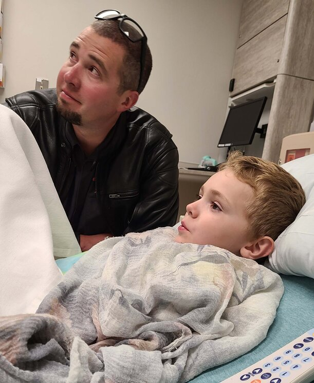
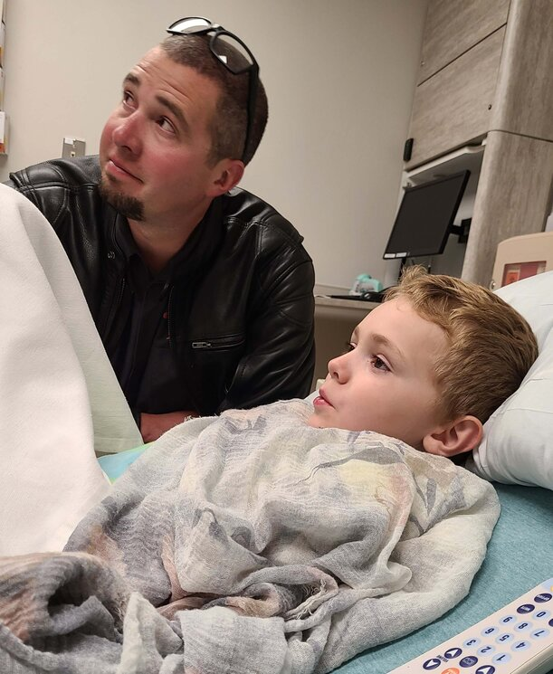
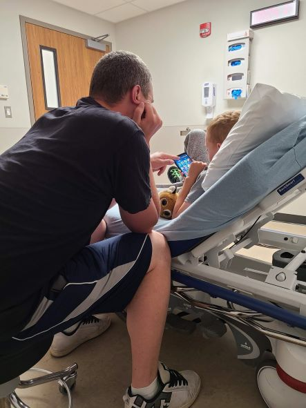
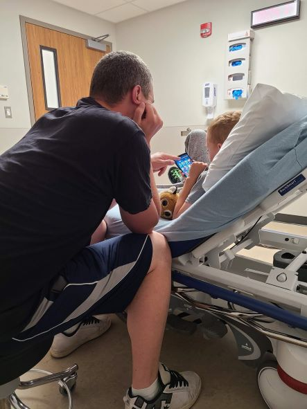

Updates On the Journey
August 13, 2022 - The Bike Trip that ended with an ER Visit
What an adventure!
Yesterday Derek and I set out with friends for a 2-day ride on the motorcycle. It ended up being one long day and a trip to the ER with Tyler. We are so thankful to have been with good friends that chose to take the long drive (although not as long as normal) at 11pm to get to the hospital with us.
Details:
Around 5:30pm, I got a call from my mom because Tyler was throwing up. Because he's Type 1 Diabetic, vomiting is a little scarier. We had my mom check ketones and double check his sugars with a finger poke to make sure the Dexcom was reading correctly.
Ketones were trace/negative about 6pm and BG was pretty normal and not concerning. His head was hurting, so we settled on it being a migraine and him needing to rest and not have any more screen time.
Fast forward a couple hours. Tyler is outside, has been napping and is going to try to eat some pizza. BG is still good. Must have been a migraine. We decide it's ok to go to the hot pools and he will be ok.
Fast forward again. We get done in the hot pools at Lava around 11pm and my mom calls as soon as I turn my phone back on. Tyler's throwing up again, can't even hold down water and ketones are now large. This is an automatic ER visit! Things can get worse quick if we don't get fluids in him. DKA is scary and a big concern at this point. My mom hurries to get things ready to take him in. I call ahead to the ER give his info and explain the situation. We go to the hotel, grab our stuff and get on the road.
By the time we got to the hospital, Tyler was on an IV, they were running blood tests and had given him meds for the nausea. He was already starting to feel better and was watching the food channel and asking for food. He was a champ about the IV, it hurt and he cried but we were told he kept his arm straight the whole time and didn't move. This is a HUGE improvement compared to diagnose last year! He's come so far which both makes me proud and breaks my heart.
Kirk and Kassie came in to visit with him. Then Kirk helped Derek give Tyler a blessing before they went home.
Once all the tests came back, we talked with the doctor and he told us we had caught everything fast enough that there was no concern for DKA. His numbers were high and had we waited until morning things could have looked really different but thankfully everything was corrected quickly with IV fluids and nausea meds.
He even got to finish out his sleepover at Grandma's and was awake bright and early full of energy!
There are so many little miracles that happened on this trip making it possible for us to get back to Tyler quick. It would take way too long to list it all but we are so thankful!
 


November 12, 2021 - Teaching Tyler's Class about Type Diabetes
Today I had the opportunity to teach Tyler's class about diabetes and how to affects him. It was a really good experience and I probably stressed over it way more than I needed too.
It was so interesting to hear his classmates' questions and see how empathic they were towards him. I feel like it really helped Tyler embrace it more and not be so scared of people knowing. It also helped me remember how thankful I am for the advancements in medicine over the years. It's easy to get discouraged when we still have to give so many shots and we have to be careful of so much. But it really is amazing the technology we have now and I'm so thankful for it.
October 6, 2021 - Derek's Official Type 1 Diagnosis and Tyler gets a Pump!
We found out last week that Derek is actually Type 1 not Type 2. We start the journey of figuring out correct doses and changing a bunch of things for him next week. I really hope we can get it all figured out soon and get him feeling better.
It's a MIRACLE he hasn't had any major complications or worse in the last 4 years! Derek and Tyler have saved each other in this journey and we are so thankful!
Tyler also got his pump today! We had a 3-hour training first thing this morning to learn all about it. It's A LOT of information and there's a lot that has to be done just right but we are excited for him to have less pokes. He only needs one poke every 3 days for the pump and one about every 10 days for the CGM.
Getting the port for the pump on him was rough because he was scared. It's a big weird setup with a needle, I was scared too! I had to lay on him to hold him down while he screamed and Derek put it on. He was really upset at first but I think he's already seeing the benefit.
Tonight, we were talking about how he was able to eat whenever he wanted and he didn't have to get a shot. Then he told me that it kind of feels like the diabetes went away and this was the cure. I wish I could take the diabetes away for real but I'm so thankful that this technology is already helping him feel better.
Now we just need Derek on it too.


July 31, 2021 - Tyler Update
We're just over a month in with this diabetes stuff now. Tyler is doing a lot better with it. He's starting to CHOOSE snacks that have carbs even though he knows he will need a shot for it. That's huge for us because he wasn't eating very much for a bit there.
He isn't fighting us with shots very often anymore as long as he has "Cutie" his stuffed dragon (shout out to Aimee for the dragon, it was a perfect gift for him). He's even starting to get use to finger pokes. He let me do it yesterday for the first time without a fight. I'm thankful we don't have to do those very often because he has a CGM.
Elizabeth has taken an interest in everything involving Tyler's care. She often checks his blood sugar and yells "44!" or "88!" every time regardless of what it actually is. She holds his hand, gets his dragon for him, helps pinch the area he needs the shot, and holds his clothing out of the way for us. She isn't bothered by the occasional blood and is quick to get a tissue to help clean up. She also gives us "shots" by pinching our arms and stabbing us with her razor-sharp finger nails. Maybe she'll be a nurse someday!
Overall, we are getting adjusted and things are going well. We are working on getting him a pump asap and crossing our fingers that we have it before school starts.
Thanks to everyone that has reached out and prayed for him! We appreciate you all.

June 27, 2021 - Tyler's Diagnosis
Over the last week we have noticed that Tyler has been showing symptoms of diabetes. We really hoped we were wrong because some of the symptoms overlap with his Autism and ADHD. However, Friday night we decided to check his sugars using Derek's meter and he was at 553! Anything over 300 is very dangerous for a kid. We ended up going to the ER and he does have Type 1 Diabetes. It took wrapping him in a blanket and 5 adults holding him down to get an IV in. But they were able to get him down to 387 with fluids and gave him some insulin before we left.
Right now, we have lots of appointments, learning and adjustments but we are doing OK. He is scared and doesn't want to do all the shots. We know he will get used to it but right now it's hard and scary.
We are angry and sad that he has to deal with this on top of the other the other things he's been diagnosed with in the last year (Autism, ADHD, Executive Processing Deficit and Anxiety) but we are also thankful to have caught it before the situation got worse.
 
